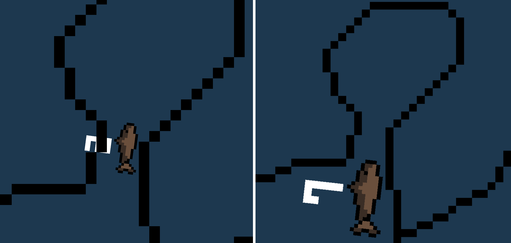

Always a Smaller Fish (Logo pending)
Tools Used:
- Godot
- GDScript
- Aseprite
- Role: Gameplay Programmer/Designer
- Team Size: 1
- Development Time: Ongoing
Always a Smaller Fish is a 2D growth-based Metroidvania game where size matters. Whether you decide to eat smaller fish to become big and strong, or stay small to fit into tight crevices and find secrets, there is more than one way to traverse this ocean.

Growth Through Growing (Or Not)
The main mechanic of this game is the fish's growth level, and how you can choose to or not to grow (or even shrink!) in order to reach certain areas.

This project is still in progress but I am frequently
working on it in my spare time.
You can follow my progress here!